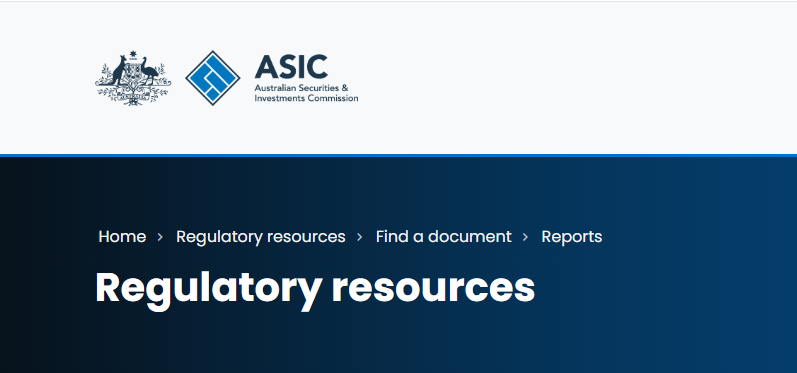
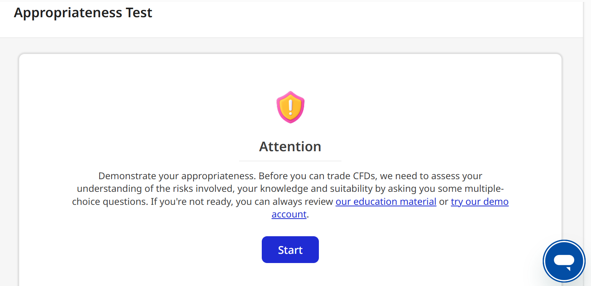
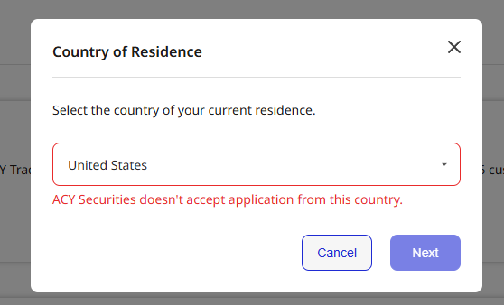
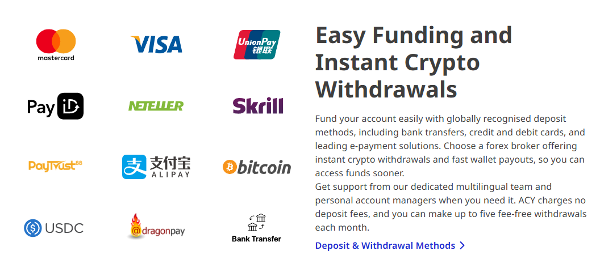
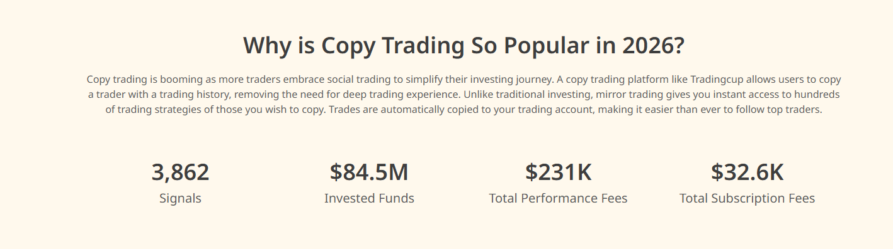
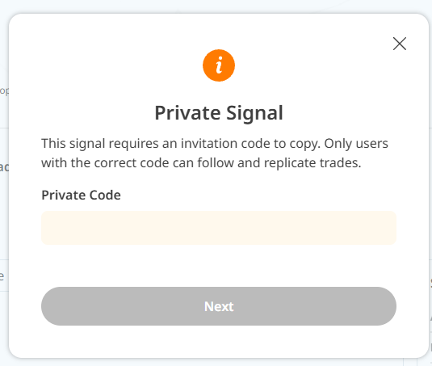

1. 澳洲金融 ASIC 監管
把澳洲 CFD 合規要求轉成開戶與審核流程，根據法規調整快速滿足監管需求更新和每日交易報告。連續三年無違規事故
- 主導 RG227 適性評估產品化，兩個月內完成監管需求更新
- 導入第三方人臉辨識，註冊轉化率提升 60%
- 建立每日交易報告 DTCC，確保合規透明度
現職為澳洲CFD卷商的產品經理，主要負責官網、KYC、出入金、合規的產品設計與落地。
| 案例 | 問題 / 我的角色 / 影響 | 證據 |
|---|---|---|
| RG227 適性評估 |
問題：ASIC RG227 要求零售客戶在開戶前完成適性評估，並以確定性規則阻擋不符合資格的客戶進入 CFD 交易流程。監管需求明確，但如何在不損害轉化率的前提下落地，是最大挑戰。 我的角色：將監管文件轉化為可實作的產品規格，包含題庫設計、重要題剔除邏輯、分數閾值、補考流程、CRM 備註規則與多語系通知內容。同步對齊法律顧問、監管聯絡人與工程團隊，確保實作符合監管意圖，而非僅符合字面規定。 影響：3 個月內完成中、英雙語流程落地，合規團隊與監管單位均確認通過審查。客戶轉化率在新增流程後維持穩定，未出現因合規阻擋導致的顯著流失。 |
 RG227 適性評估監管依據與參考資料：  
|
| Veriff 身份驗證導入 |
問題：人工審核證件效率低落，跨國證件辨識錯誤率高，且本人比對（liveness check）不穩定，導致開戶流程緩慢，客戶在等待審核期間大量流失。 我的角色：評估並主導導入 Veriff 作為第三方身份驗證供應商，定義各驗證狀態的處理邏輯（passed / failed / resubmit / manual review）、失敗原因分類、補件引導文案與後台人工覆核觸發條件。同步串接 PEP 與制裁名單篩查，確保高風險命中者自動進入人工審核而非直接放行。 影響：導入後，符合條件的客戶可全自動完成身份驗證並開戶，註冊轉化率提升 60%。PEP 與制裁名單命中者系統自動阻擋，稽核軌跡可追蹤，人工審核量顯著下降。 |
Veriff 導入
Veriff 官方資源： 

|
| 每日交易報告 DTCC |
問題：ASIC 更新 OTC 衍生品報告規範，要求每日提交涵蓋槓桿倍數、交易明細、EOD 結算價、保證金水位與交易對手方識別碼的結構化報告。舊有欄位定義分散於多個系統，跨部門資料對齊困難，且報告格式需符合 DTCC GTR 規範。 我的角色：主導欄位盤點，確認每個欄位的定義來源、計算邏輯、資料所屬系統與責任方。產出完整的欄位對照規格，交付工程團隊實作自動抓取與每日上傳。同時建立 D+1 補件機制，確保資料缺漏時可在時限內補正。 影響：每日報告流程全自動化，D+1 補件機制有效覆蓋資料缺口。自導入以來，2025 年至今無任何違規或補正紀錄，通過 ASIC 定期稽核。 |
DTCC 報告流程
監管依據與參考資料： 
|
| 約旦監管報告提交 |
問題：約旦金融監管機構（JSC）要求定期提交涵蓋交易明細、保證金水位、EOD 結算資料與代理傭金分潤的多維度報告。原始資料分散於三個不同系統，欄位命名不一致，且計算邏輯未統一，無法直接整合輸出符合規範的報告格式。 我的角色：以 SQL 逐一盤點各系統資料欄位，比對監管報告所需格式，識別缺口與差異。統一跨系統欄位定義與計算邏輯，產出完整的報告欄位規格文件，並協調工程團隊在兩週內完成開發與首次提交。同步建立 D+1 補件流程，確保後續可持續提交。 影響：兩週內完成報告開發與首次提交，通過 JSC 審核。後續納入常態化 D+1 補件機制，不再依賴人工手動匯出，監管報告流程可重複執行。 |
 約旦監管報告 |
| 西班牙 CNMV 與法國 AMF 示警處理 |
問題：西班牙 CNMV 與法國 AMF 相繼對公司發出合規示警，示警內容出現在監管機構公開名單上，直接影響品牌搜尋結果、自然流量與客戶對客服的信任度。部分客戶因此暫停開戶或提出帳戶問題，客服量上升。 我的角色：系統性拆解示警涉及的網站內容、入口頁面、法律聲明與風險揭露文件，建立逐項整改清單（checklist）。協調法律、合規、行銷、工程與客服團隊，分工追蹤每個整改項目的完成狀態，並準備佐證材料供監管機構重新審查。 影響：西班牙 CNMV 與法國 AMF 雙雙解除封鎖並取消公開示警。整改過程建立了可重複使用的示警處理 SOP，後續其他市場出現類似情況時可直接套用。 |
CNMV / AMF 處理
相關監管示警資料： 

|
| 中國地區合規審查與域名封鎖 |
問題：域名封鎖影響中國客戶開戶、登入、入金與客服量。 我的角色：我建立域名狀態、替代入口、客服口徑與風險提醒追蹤表。 影響：把臨時救火改成可追蹤機制，營運與客服可用一致口徑處理。 |
中國地區域名處理 |
| 虛擬貨幣出入金流程 |
問題：鏈上確認、錢包歸屬與 KYC 狀態分散，出入金風險高。 我的角色：我設計 Binance / ACH 出入金狀態，串接 KYC、AML 與人工審核。 影響：虛擬貨幣出入金可追蹤、可審核，不再只靠人工查鏈上紀錄。 |
 虛擬貨幣出入金 |
| 錢包認證與同進同出 |
問題：錢包不一致會造成第三方付款、資金來源不明與錯誤放行。 我的角色：我定義錢包認證、同進同出、補件與人工審核規則。 影響：降低第三方付款風險，統一客服、營運與風控判斷標準。 |
錢包認證 |
| 新市場 10 種支付方式導入 |
問題：不同市場支付習慣、成功率、成本與風控限制差異大。 我的角色：我盤點中東、中國、日本、越南、印度、東南亞支付方式，定義導入優先級。 影響：新增 10 種支付方式，降低單一渠道失效造成的轉化損失。 |
新市場支付導入 |
| 支付流程成功率優化 |
問題：支付失敗原因分散在欄位、渠道、風控、回傳狀態與客服引導。 我的角色：我拆解掉單節點，調整前台提示、渠道排序、錯誤原因與人工審核路徑。 影響：支付成功率提升 30%。 |
支付成功率優化 |
| 跟單者 Compliance 流程 |
問題：快速跟單容易弱化策略理解、風險揭露與責任邊界。 我的角色：我設計跟單前確認流程，加入策略資訊、風險提示與確認紀錄。 影響：支撐超過 10K 跟單者，保留風險揭露與可追蹤紀錄。 |
 跟單者流程 |
| 帶單者規則與品質控制 |
問題：帶單者增加後，策略品質、績效呈現與風險描述容易失準。 我的角色：我定義策略資料、績效指標、排序邏輯、異常監控與下架規則。 影響：支撐 3K 帶單者，擴大供給同時維持品質與風險邊界。 |
帶單者規則 |
| 自動跟單風險揭露與停止機制 |
問題：使用者開始跟單後，容易忽略策略變化與市場波動。 我的角色：我把風險揭露、暫停、停止跟單與異常提醒納入流程。 影響：降低使用者把自動跟單誤解為保證收益工具的風險。 |
風險揭露與停止 |
| 高資產規模服務邊界 |
問題：高價值客戶需要更快服務，但不能跳過合規節點。 我的角色：我定義升級路徑、優先處理條件、風險審查點與不可跳過規則。 影響：支撐最高 80M USD 管理資金，保留合規邊界與風險控制。 |
 高資產服務邊界 |
資深合規產品經理 / 風控產品 / 開戶與支付風險產品